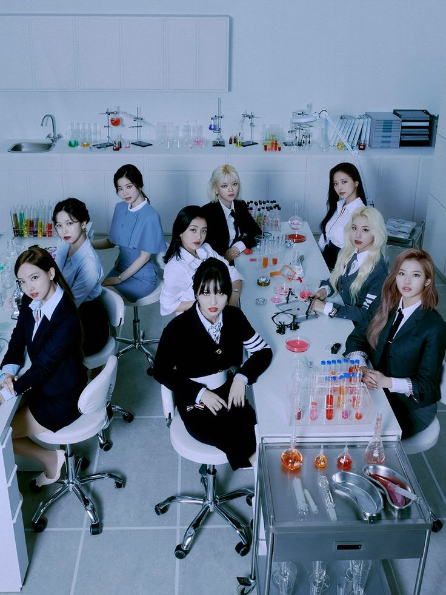

Ficha tecnica
| Concepto | Detalle |
|---|---|
| Fecha debut | 20 de octubre de 2015 (The Story Begins) |
| Canción de debut | LIKE OHH-AHH |
| Sello dsicografico | JYP Entertainment/Republic records |
| Integrantes | Nayeon, Jeongyeon, Momo, Sana, Jihyo, Mina, Dahyun, Chaeyoung, Tzuyu. |
| Slogan | One in a million |